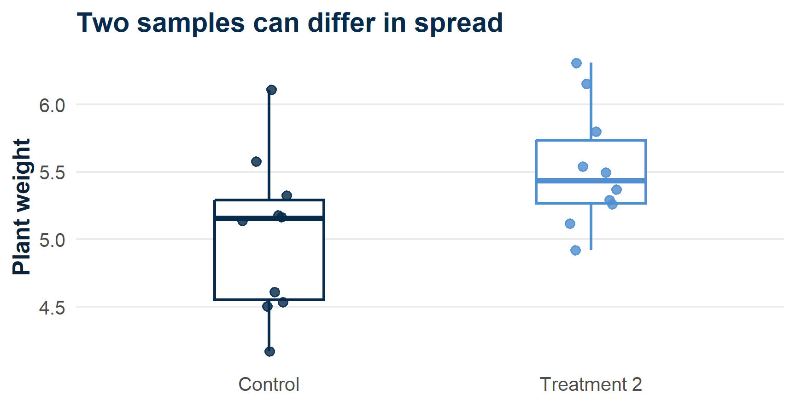
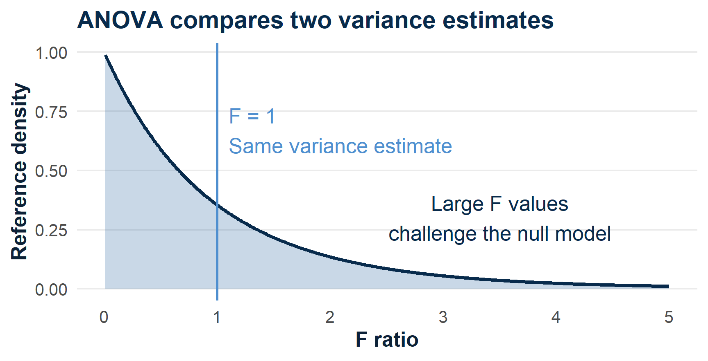
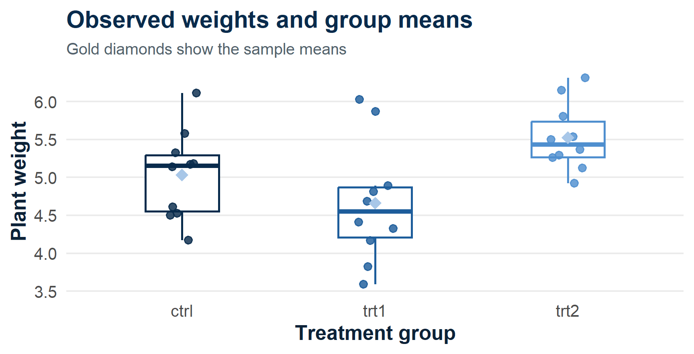
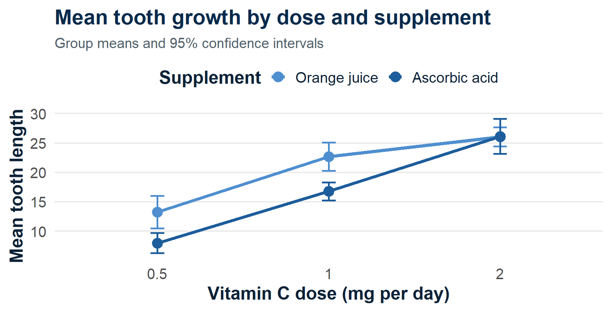
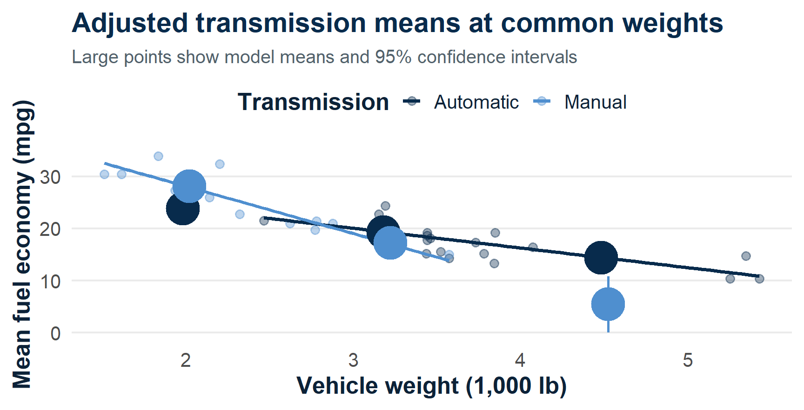
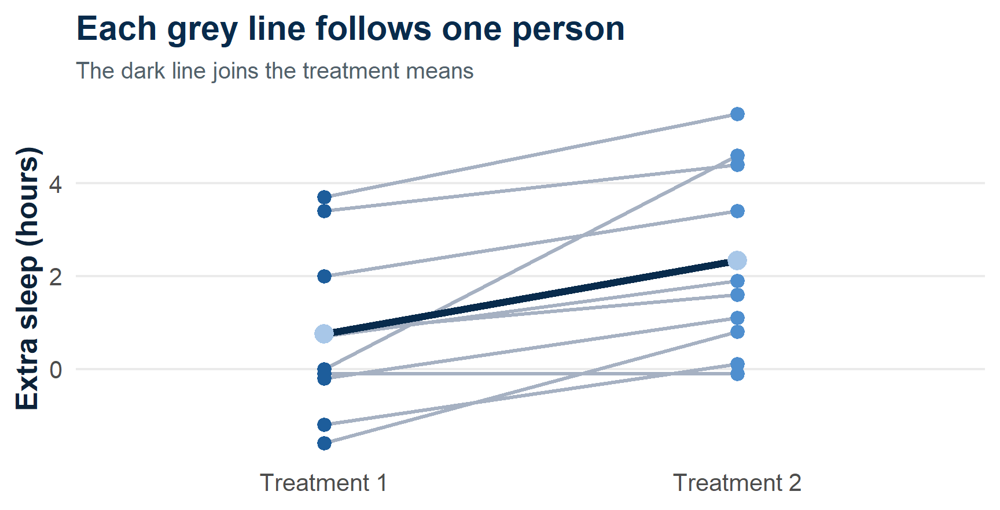
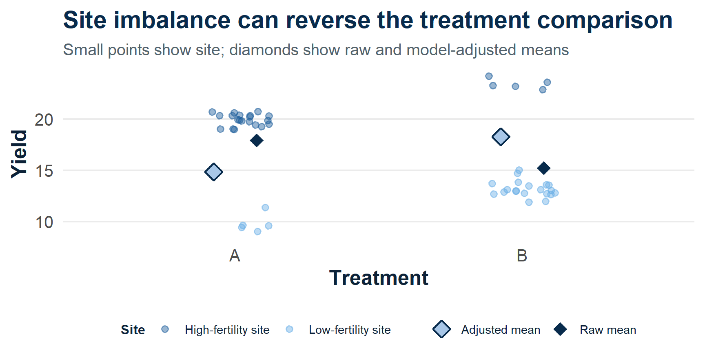
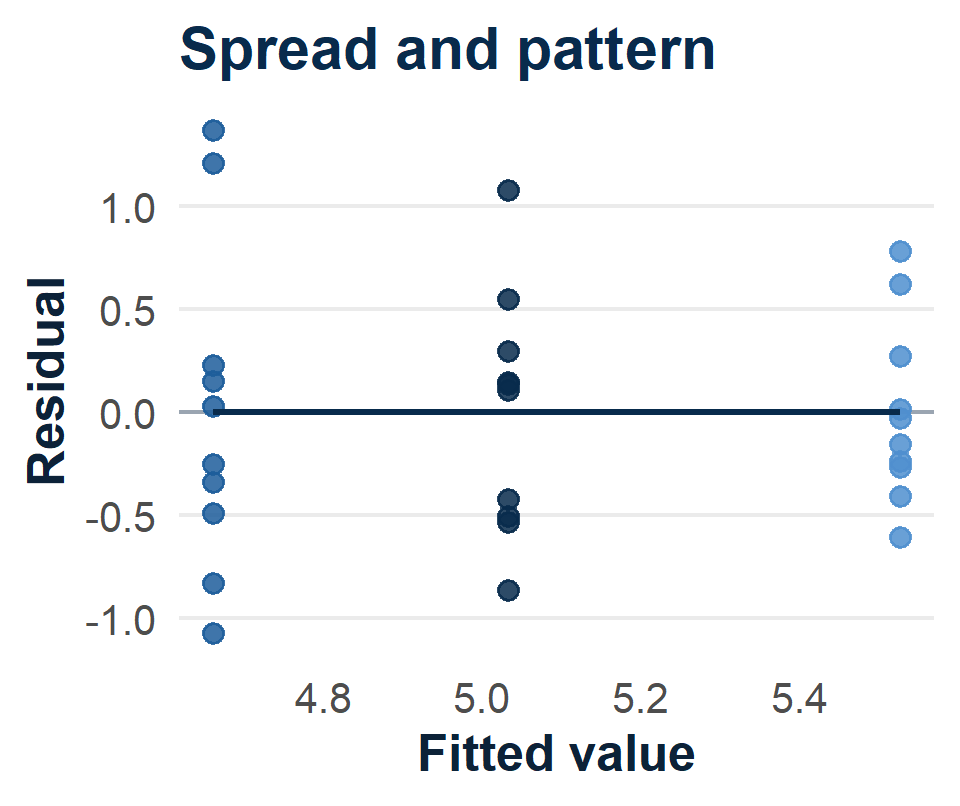
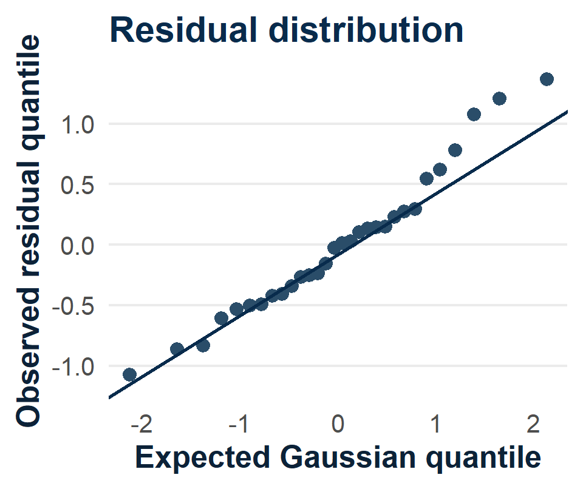

Theory, model evidence, and interpretation
This lecture builds the reasoning behind ANOVA. The figures and model outputs come from R, while the code remains hidden.
For each model, ask four questions:
The practical session will later show how to write and adapt the code.
The lecture uses four datasets that come with R:
| Dataset | Response | Design question |
|---|---|---|
PlantGrowth |
Plant weight | Do three treatment means differ? |
ToothGrowth |
Tooth length | Do supplement and dose work together? |
mtcars |
Fuel economy | Does the weight relationship differ by transmission? |
sleep |
Extra sleep | Do the same people respond differently to two treatments? |
The examples move from independent groups to designs with interactions and repeated observations.
Suppose we can score happiness as 1 for unhappy, 2 for neutral, and 3 for very happy.
🙋🏽 🧑 🙍🏽 🙋 🙍 🧑🏽
🙋 🙋🏽 🧑 🙍🏽 🧑🏽 🙍
Someone claims that happiness differs between the brown and yellow groups. Before testing that claim, we must decide what kind of difference we mean.
A t-test asks whether the average happiness score differs between the two groups.
An F-test of variances asks whether happiness scores spread out by different amounts.
If the groups come from populations with the same variance, their scores should show similar spread. Equal variance does not require identical proportions in every happiness category.
The two groups can have a similar mean but different variance. One group clusters near the centre, while the other contains more extreme scores.
The F-test asks whether the observed difference in spread is larger than sampling variation would usually produce.
The F-statistic first has a simple job. It compares the variance from one group with the variance from another group.
\[ H_0:\sigma_1^2=\sigma_2^2 \]
\[ F=\frac{s_1^2}{s_2^2} \]
Place the larger sample variance in the numerator for an intuitive reading. Similar variances give an F-value near 1. A value far above 1 means that one sample spreads out much more than the other.
The F reference distribution uses \(n_1-1\) and \(n_2-1\) degrees of freedom to judge how unusual the ratio is under \(H_0\).
The standalone F-test compares two population variances:
\[ H_0:\sigma^2_{\text{control}}=\sigma^2_{\text{treatment 2}} \]

The reference distribution assumes independent Gaussian observations. A small p-value gives evidence that the two population variances differ.
ANOVA stands for analysis of variance. It is one global F-test of whether a numeric response has the same population mean across several groups.
Use it when the response is numeric and a categorical factor defines three or more groups. For happiness scores, the null hypothesis is:
\[ H_0:\mu_1=\mu_2=\cdots=\mu_k \]
ANOVA tests all \(k\) means together instead of running a t-test for every pair. A significant result means that at least one mean differs. Focused comparisons later identify the pattern.
Although the question concerns means, ANOVA answers it by comparing variance associated with the group means against variance among observations inside the groups.
ANOVA keeps the same ratio idea but changes what the two variance estimates represent.
\[ F=\frac{MS_{\text{model}}}{MS_{\text{error}}} \]
A mean square, written as \(MS\), is a sum of squared deviations divided by its degrees of freedom. This division turns the sum of squares into a variance estimate.

The curve shows F-values expected when the null model is true. Values near 1 are common. Large values lie in the right tail and challenge the claim that the model and error mean squares estimate the same variance.
Pause for reflection. Use two minutes to consolidate the concept that has just concluded.
The same mixed crowd can be reorganised in many ways. We could group people by colour, happiness category, or combinations of both.
🙍🏽 🧑🏽 🙋🏽 | 🙍 🧑 🙋
🙍🏽 🙍 | 🧑🏽 🧑 | 🙋🏽 🙋
Each regrouping creates possible comparisons. If we keep trying t-tests, we increase the chance of finding a difference that arose by chance.
ANOVA protects the first decision by asking one global question across all \(k\) groups:
\[ H_0:\mu_1=\mu_2=\cdots=\mu_k \]
A significant F-test says that at least one population mean differs. It does not identify the pair or pattern, so focused comparisons come later.
One-way ANOVA has one continuous response and one categorical explanatory variable.
For PlantGrowth:
weight is the responsegroup identifies control, treatment 1, or treatment 2The model compares variation among the three fitted means with variation among plants in the same group.
PlantGrowth: columns used in the model| Plant weight | Treatment group |
|---|---|
| 4.17 | ctrl |
| 5.58 | ctrl |
| 5.18 | ctrl |
| 6.11 | ctrl |
| 4.50 | ctrl |
| 4.61 | ctrl |
Each row represents one plant. The response column contains the measured weight, and the group column records which treatment the plant received.

The group means differ, but plants within each group also vary. The F-test judges the group pattern relative to that within-group variation.
The model needs:
Independence comes from the study design. Residual plots can help evaluate the distribution and spread assumptions.
| Term | Df | Sum of squares | Mean square | F | p |
|---|---|---|---|---|---|
| group | 2 | 3.77 | 1.88 | 4.85 | 0.0159 |
| Residuals | 27 | 10.49 | 0.39 | NA | NA |
The group row gives \(F(2,27)=4.85\) and \(p=0.016\). The data therefore give evidence that the population means are not all equal.
The result remains global. We still need model-based comparisons to identify the group pattern.
Pause for reflection. Use two minutes to consolidate the concept that has just concluded.
The ToothGrowth study recorded tooth growth in 60 guinea pigs after they received vitamin C through one of two supplements and at one of three doses.
The research question is whether mean tooth growth responds to dose in the same way for both supplements.
ToothGrowth: columns used in the model| Tooth length | Supplement | Dose (mg/day) |
|---|---|---|
| 4.2 | Ascorbic acid | 0.5 |
| 11.5 | Ascorbic acid | 0.5 |
| 7.3 | Ascorbic acid | 0.5 |
| 5.8 | Ascorbic acid | 0.5 |
| 6.4 | Ascorbic acid | 0.5 |
| 10.0 | Ascorbic acid | 0.5 |
The first rows happen to show one supplement and one dose. The full dataset contains every supplement-by-dose combination, with ten guinea pigs in each combination.

At each dose, the vertical gap between the points shows the difference between the two supplement means. The gap becomes smaller as dose increases, so the lines converge.
Parallel lines would show a similar supplement difference at every dose. These non-parallel lines suggest that the supplement effect depends on dose.
| Term | Df | Sum of squares | Mean square | F | p |
|---|---|---|---|---|---|
| supp | 1 | 205.35 | 205.35 | 15.57 | <0.001 |
| dose_group | 2 | 2426.43 | 1213.22 | 92.00 | <0.001 |
| supp:dose_group | 2 | 108.32 | 54.16 | 4.11 | 0.0219 |
| Residuals | 54 | 712.11 | 13.19 | NA | NA |
The interaction row tests this null hypothesis:
The difference between the supplement means is the same at every dose.
Here, \(F(2,54)=4.11\) and \(p=0.022\). The data give evidence that the supplement difference depends on dose.
The ANOVA table establishes that a dependency exists, but it does not show its direction. The graph shows that the supplement means converge as dose increases. Later pairwise comparisons can test the supplement difference at each dose.
A high interaction p-value would mean that the data do not give clear evidence that the supplement difference changes with dose.
A covariate is a continuous explanatory variable. Adding it lets the model compare group means after accounting for a continuous trend.
For fuel economy:
mpg is the responseVehicle weight relates to fuel economy and may also differ between transmission groups. The model therefore compares the expected mean fuel economy of automatic and manual cars at the same weight.
The transmission-by-weight interaction asks whether this adjusted mean difference changes as vehicle weight changes.
mtcars: columns used in the model| Fuel economy (mpg) | Transmission | Weight (1,000 lb) |
|---|---|---|
| 21.0 | Manual | 2.620 |
| 21.0 | Manual | 2.875 |
| 22.8 | Manual | 2.320 |
| 21.4 | Automatic | 3.215 |
| 18.7 | Automatic | 3.440 |
| 18.1 | Automatic | 3.460 |
Each row represents one car model. The analysis compares transmission means while accounting for vehicle weight.

At each selected weight, the two large points are the expected mean fuel economies for automatic and manual cars. Their vertical gap is the adjusted transmission difference at that weight.
The lines are not parallel, so this adjusted mean difference changes with weight. The same pattern can be described as a difference between the two weight slopes.
| Term | Estimate | SE | t | p |
|---|---|---|---|---|
| (Intercept) | 31.42 | 3.02 | 10.40 | < 0.001 |
| transmissionManual | 14.88 | 4.26 | 3.49 | 0.00162 |
| wt | -3.79 | 0.79 | -4.82 | < 0.001 |
| transmissionManual:wt | -5.30 | 1.44 | -3.67 | 0.00102 |
The term transmissionManual:wt is written from the viewpoint of the manual-versus-automatic difference. Its coefficient is \(-5.30\) with \(p=0.001\).
For every increase of 1,000 lb, the expected manual advantage decreases by 5.30 miles per gallon. The low p-value gives evidence that the manual-versus-automatic difference changes with weight.
The interaction coefficient does not represent one overall difference between transmission means because the difference has a different value at each weight.
The interaction is not significant. The data do not show that the effect changes across conditions. If the research design permits it, remove the interaction and fit a parallel, additive model. A Type II test can then give a clean overall test of each main effect.
The interaction is significant. Report the interaction test. Stop interpreting the main-effect rows from Type I, Type II, or Type III tables because each main effect averages across a relationship that changes. Use simple effects or simple slopes to explain the interaction.
In this example, the interaction p-value is 0.001. We therefore focus on how the transmission difference changes with weight.
A simple effect is the effect of one predictor at one specified level or value of another predictor. It takes one vertical slice through the interaction graph.
The transmission main effect asks whether manual and automatic cars differ after averaging across car weights. That average can hide the interaction.
A transmission simple effect asks the same comparison at one realistic weight:
| Weight (1,000 lb) | Automatic mean mpg | Manual mean mpg | Manual - Automatic | SE | p |
|---|---|---|---|---|---|
| 2.0 | 23.84 | 28.13 | 4.28 | 1.75 | 0.021 |
| 3.2 | 19.30 | 17.22 | -2.08 | 1.41 | 0.152 |
| 4.5 | 14.38 | 5.42 | -8.96 | 2.76 | 0.003 |
A positive manual-minus-automatic difference favours manual cars. A negative difference favours automatic cars. Each p-value tests \(H_0\): the two transmission means are equal at that stated weight.
The simple effects show the interaction directly: the manual advantage among light cars reverses as weight increases.
| Transmission | MPG change per 1,000 lb | Lower 95% CI | Upper 95% CI |
|---|---|---|---|
| Automatic | -3.79 | -5.40 | -2.18 |
| Manual | -9.08 | -11.57 | -6.60 |
For automatic cars, an extra 1,000 lb is associated with 3.79 fewer miles per gallon. For manual cars, the estimated reduction is 9.08 miles per gallon.
The interaction is the difference between these slopes: \(-9.08-(-3.79)=-5.30\). Each 1,000 lb increase reduces the expected manual-versus-automatic difference by 5.30 miles per gallon.
A simple effect compares transmissions at one weight. A simple slope describes the weight-mpg relationship within one transmission group. emmeans estimates the first quantity, while emtrends estimates the second.
For beginners, the coefficient table from lm() and the interaction plot usually provide the clearest starting point.
lm() gives separate contrasts against one reference group. Type II car::Anova() adds one overall F-test and p-value for the whole factor.lm() t-test and the factor F-test answer the same one-degree-of-freedom question. Their p-values match because \(F=t^2\).car::Anova() can give one overall interaction F-test. Ignore its main-effect rows and use emmeans or emtrends to explain the interaction.Repeated measures occur when one observational unit supplies several outcomes.
In sleep, one person supplies an outcome under treatment 1 and another outcome under treatment 2. Measurements from the same person share biology and context, so they are related.
A standard one-way ANOVA would treat all 20 rows as independent. Repeated-measures ANOVA preserves the pairing and evaluates change within people.
sleep: columns used in the model| Person | Treatment | Extra sleep (hours) |
|---|---|---|
| 1 | Treatment 1 | 0.7 |
| 2 | Treatment 1 | -1.6 |
| 3 | Treatment 1 | -0.2 |
| 4 | Treatment 1 | -1.2 |
| 5 | Treatment 1 | -0.1 |
| 6 | Treatment 1 | 3.4 |
The same person appears once under each treatment. The repeated identifier tells the model which rows belong to the same response profile.
Every F-test needs a denominator that represents ordinary variation for the comparison.
For the treatment effect, the correct error source is the variation in how people change between treatments. The overall differences between people belong to a separate source of variation.
The R term Error() tells aov() how to split the unexplained variation into these error strata. It does not create a new error metric. It identifies which variation should form the denominator of each F-test.
ID / group meansFirst identify the grouping unit across which independent response profiles are repeated. Here, ID identifies each person.
Then identify the axis along which observations repeat within that grouping unit. Here, group identifies the treatments measured within each person.
ID / group expands to:
\[ ID + ID:group \]
ID represents stable differences between people.ID:group represents variation among the treatment profiles of different people.The slash records this grouping hierarchy.

Each grey line is one person’s response profile across the treatment conditions. The dark line is the mean profile.
Repeated-measures ANOVA asks whether the mean profile changes systematically across conditions, relative to variation in the shapes of individual profiles. With two conditions, each profile has one change. With three or more conditions, the same logic tests a fuller trajectory.
| Source | Df | Sum of squares | Mean square | F | p |
|---|---|---|---|---|---|
| group | 1 | 12.48 | 12.48 | 16.5 | 0.00283 |
| Residuals | 9 | 6.81 | 0.76 | NA | NA |
The treatment F-test uses the ID:group residual mean square as its denominator. It gives \(F(1,9)=16.50\) and \(p=0.003\).
The mean extra sleep increases within people under treatment 2. The pairing makes this conclusion more precise because stable differences between people do not enter the treatment error term.
The same reasoning transfers to other studies:
| Study design | Grouping hierarchy and repeated axis | Error structure |
|---|---|---|
| People measured over time | ID and time |
Error(ID / time) |
| Two conditions at several times | ID, condition, and time |
Error(ID / (condition * time)) |
| Plots nested within blocks | block contains several plot units |
Error(block / plot) |
| Treatment between people, time within people | ID and time |
Treatment and time in the model, Error(ID / time) |
The term before the slash identifies a grouping level, not automatically the observational unit. In Error(block / plot), blocks group several plots, while plots sit within blocks. The measured unit may be the plot or a smaller unit inside it, depending on the study design.
Pause for reflection. Use two minutes to consolidate the concept that has just concluded.
ANOVA answers one global question: do any population means differ?
It does not tell us which groups differ. We need follow-up comparisons for that purpose.
Every extra comparison gives us another chance to find a small p-value by luck. An adjustment adds a penalty for this statistical fishing.
Tukey’s HSD compares every pair of group means and gives p-values that already include an all-pairs penalty.
Use Tukey’s method when the question requires every pairwise comparison among the factor levels.
The output gives one estimated difference and one Tukey-adjusted p-value for each pair. The adjustment reduces the chance of declaring a chance difference significant while we search across all pairs.
The next decision is which means Tukey should compare. Model-adjusted means from emmeans are safer than raw means when the design is unbalanced or contains covariates.

Treatment A contains many observations from high-fertility sites, while treatment B contains many from low-fertility sites. The raw means therefore mix treatment and site.
The model-adjusted means compare both treatments using the same balance of site types. They show the treatment comparison after accounting for site.
An estimated marginal mean is a mean predicted by the fitted ANOVA model. The model calculates each treatment mean while holding covariates to a common value or averaging other factors in the same way for every treatment.
This provides a fairer comparison when:
When the design is balanced and no covariate adjustment is needed, observed means and estimated marginal means are the same.
The safest general workflow is to obtain the means from the fitted model with emmeans, then run the pairwise comparisons on those means and request the required adjustment.
| Group | Estimated marginal mean | SE | Lower 95% CI | Upper 95% CI |
|---|---|---|---|---|
| ctrl | 5.03 | 0.2 | 4.63 | 5.44 |
| trt1 | 4.66 | 0.2 | 4.26 | 5.07 |
| trt2 | 5.53 | 0.2 | 5.12 | 5.93 |
PlantGrowth has ten plants in each group, so the estimated marginal means equal the observed group means.
The confidence intervals describe uncertainty in each population mean. Pairwise contrasts then compare these fitted means using the model’s residual variation.
| Comparison | Difference | SE | t | Tukey-adjusted p |
|---|---|---|---|---|
| ctrl - trt1 | 0.37 | 0.28 | 1.33 | 0.391 |
| ctrl - trt2 | -0.49 | 0.28 | -1.77 | 0.198 |
| trt1 - trt2 | -0.86 | 0.28 | -3.10 | 0.012 |
The treatment 1 versus treatment 2 comparison has an adjusted p-value of 0.012. The other pairs do not cross the 0.05 threshold after Tukey adjustment.
The comparison uses estimated marginal means. Tukey controls the family-wise error across all three pairwise tests.
With four groups, Tukey tests six pairs. Every extra test adds a multiple-testing penalty, including pairs that may not answer the research question.
Control ↔︎ Trt 1, Trt 2, and Trt 3
Trt 1 ↔︎ Trt 2 and Trt 3
Trt 2 ↔︎ Trt 3
Suppose the fitted means are Control = 5, Treatment 1 = 10, Treatment 2 = 15, and Treatment 3 = 22.
Question: How much higher is the average of Treatments 2 and 3 than the average of Control and Treatment 1?
\[ \frac{15+22}{2}-\frac{5+10}{2}=18.5-7.5=11.0 \]
\[ (-0.5\times5)+(-0.5\times10)+(0.5\times15)+(0.5\times22)=11.0 \]
The weights sum to zero, so a common shift in all four means cancels out. The positive weights sum to \(+1\) and the negative weights sum to \(-1\), which keeps the answer in the original response units.
With \(k\) groups, we can define up to \(k-1\) mutually independent contrasts. Four groups therefore support three independent questions.
| Group (fitted mean) | Q1: New pair vs old pair | Q2: Within old pair | Q3: Within new pair |
|---|---|---|---|
| Control (5) | -0.5 | -1 | 0 |
| Treatment 1 (10) | -0.5 | +1 | 0 |
| Treatment 2 (15) | +0.5 | 0 | -1 |
| Treatment 3 (22) | +0.5 | 0 | +1 |
| Resulting difference | +11.0 | +5.0 | +7.0 |
Each column divides the groups in a different direction. These are orthogonal contrasts, so they carry distinct information. In R, pass the weight vectors to emmeans::contrast().


Look for a strong curve, a funnel, or an extreme point. The Q-Q plot should follow the line reasonably well. Independence still comes from the study design.
Choose the next model from the response and the dependence structure.
| Problem | Model direction |
|---|---|
| Binary response | Binomial generalised linear model |
| Counts with a mean-variance relationship | Poisson or negative-binomial model |
| Repeated or grouped continuous outcomes | Linear mixed model |
| Non-Gaussian outcomes with grouping | Generalised linear mixed model |
A new model changes the assumed response distribution or the correlation structure. It cannot repair weak measurements or a poor study design.